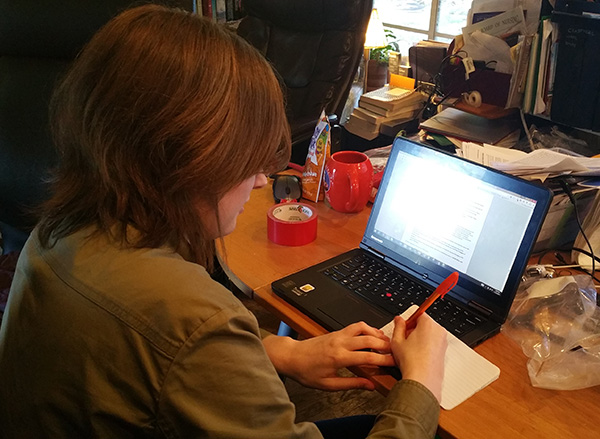

We rarely prepare enough for awards, usually hoping the practice before that we've done enough to be in the running. Last year we won the PTC Creo award at one competition, but that was a one time deal. This year we can prepare our journal in such a way to make it easier for judges to find what they're looking for when deciding. 
Out of the 9 awards, 7 are given at every tournament. These main 7 are Inspire, Think, Connect, Innovate, PTC Design, Motivate, and Control.
Following are summaries/key points of the main 7 awards.
Inspire
Most of these awards hinge on us being able to effectively present our achievements to judges, with a well organized engineering notebook. Our tagging system will make it easy to categorize posts based on what award they fall under, I just need to add sorting pages for these 7 new tags. Then we can print out extra engineering notebooks dedicated to each award. When added, we will go through previous posts and tag based on the relevant award category. All the more reason to get this done quickly, the posts are piling up.